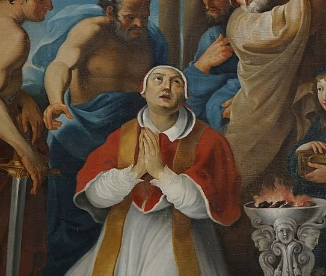

St. Lucius
St. Lucius I (253-254) was exiled, but returned to Rome shortly afterwards and continued the policy of opposition to Novatian which had been inaugurated by Cornelius. He followed the rule laid down by Cornelius and Cyprian with regard to the readmission of the lapsed after due penance.
McSorley, Joseph. An Outline History of the Church by Centuries (from St. Peter to Pius XII). 2nd Ed. 1944.